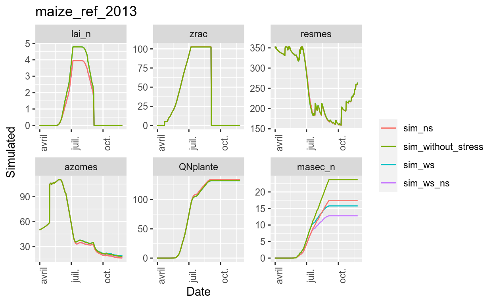
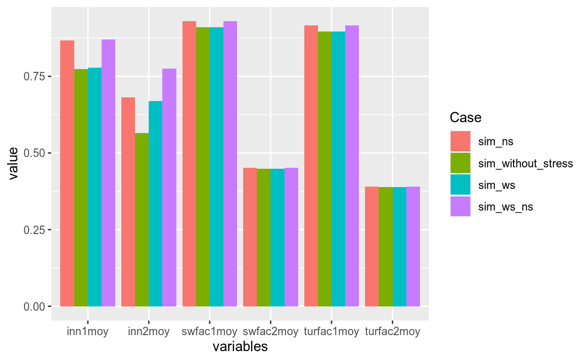

Introduction
The SticsRpacks packages
SticsRPacks is a set of packages for managing the STICS soil-crop model from R.
It includes 4 packages:
- SticsRFiles: to manipulate STICS input and output files,
- SticsOnR: to run STICS simulations,
- CroPlotR: to plot models results / observations and compute stats,
- CroptimizR: to estimate model parameters.
SticsRFiles and SticsOnR are dedicated to the STICS model, while CroPlotR and CroptimizR are generic for crop models (i.e. they can be used with any crop model that has an adequate R wrapper).
The websites of the different packages can be found at:
Finding documentation about the packages and their functions
There are different sources of documentation regarding the packages and their functions:
- the home pages of the packages websites (which links are given here-before), that introduce the packages main features,
- the vignettes (
Articlestab at the top of the packages websites home pages), that describe in detail the main features of the packages and the use of the associated functions, - the
Referencetab at the top of the packages websites home pages, that lists and quickly describes all the exported functions of the packages, and gives links to their detailed documentation, - the command
? functionNamein the R console, which displays the detailed documentation of a given function.
Note also that completion can be used to list the different arguments of a function: if you type the name of a function in the R console followed by a bracket, e.g. read.csv( and then click on the Tab button of your keyboard, the list of arguments of the function will be displayed.
The SticsRpacks tutorial
This tutorial aims at introducing the use of these different packages with the STICS model. It was designed to be of increasing complexity, it is thus advised to follow it in order. The different sections are however independent and you can thus start it from any part using the menu on the left side (this may however take a little while since results from previous exercises must be automatically generated in this case).
The names and documentation of the functions to be used are given in the first exercises before letting you find them on your own as you go through the exercises.
Most of the exercises in the tutorial requires writing and running a few lines of R code through R console panels like this one:
# Insert your R code here!# This is the first advise!# Here's the SOLUTION:
get_var_info(keyword = "roots")You just have to type the R code in the black part and click on the Run Code green button on the right side to run it. The results will be printed below the panel. You can use these panels to do whatever tests you want to do to explore the features of the packages.
The Start over button re-initialize the panel.
If you don’t find the solution, click on the button Hints, it will give you an advice. If you click again and again several advises will be given (dependgin on the exercise) and finally the expected solution of the exercise. To copy the solution in the panel, click on the Copy to Clipboard blue button on the right and then right-click in the black part of the panel and select “paste”. You can train on the panel above.
This tutorial automatically downloaded JavaStics in a temporary folder of your computer: C:/Users/giner/AppData/Local/Temp/STICSR~1/JavaSTICS-1.41-stics-9.2. The path of this folder is stored in the javastics_path R object.
It will be used in the following to perform the exercises. The exercises will use the USMs defined in the “example” workspace of JavaStics (stored in C:/Users/giner/AppData/Local/Temp/STICSR~1/JavaSTICS-1.41-stics-9.2/example). The path of this workspace is stored in the workspace_path R object.
A foretaste of SticsRpacks
Let see first the possibilities offered by the SticsRPacks packages through two simple illustrative examples. At this stage it is not necessary to understand the code, the aim in this section is just to show you what we can do with a few lines of R codes, you will learn how to use all the functions used here in the next sections :-). If you feel lost in this section or are hurry to start learning how to use the packages you can skip it and go to the next one!
STICS training Practical session PW1
The practical sessions of the STICS training are traditionally performed using the JavaStics GUI and Excel.
Let’s see how the first sessions would look like in R using SticsRPacks.
The game is to run a single USM by activating and deactivating water and nitrogen stress in turns and to analyze the impact by looking at dynamic variables and stress indicators.
Let’s first initialize variables and define the setup:
# Let's define the USM and variables of interest to use in this example
usm_name <- "maize_ref_2013"
stress_ind_names <- c("turfac1moy", "turfac2moy", "swfac1moy", "swfac2moy", "inn1moy", "inn2moy")
dyn_var_names <- c("lai_n","zrac","resmes","azomes","QNplante","masec_n")
var_names <- c(stress_ind_names,dyn_var_names)
# Set-up the simulation environment:
wrapper_options = stics_wrapper_options(javastics = javastics_path, workspace = workspace_PW1)
# Generate the files for the simulation:
gen_usms_xml2txt(javastics_path, workspace_PW1, usm = usm_name)Then, let’s run the simulations for the different configurations:
# Simulate a reference situation with water and nitrogen stress
sim_ws_ns = stics_wrapper(model_options = wrapper_options,
param_values = c(codeinnact=1, codeh2oact=1),
var = var_names)$sim_list## Warning: The `data_dir` argument of `stics_wrapper_options()` is deprecated as of SticsOnR 0.5.0.
## Please use the `workspace` argument instead.
## This warning is displayed once every 8 hours.
## Call `lifecycle::last_lifecycle_warnings()` to see where this warning was generated.## Warning: The `javastics_path` argument of `stics_wrapper_options()` is deprecated as of SticsOnR 0.5.0.
## Please use the `javastics` argument instead.
## This warning is displayed once every 8 hours.
## Call `lifecycle::last_lifecycle_warnings()` to see where this warning was generated.## Warning: Error running the Stics model for USM ___maize_ref_2013 .
## Error: could not open ficini.txt unit= 36# Simulate with water stress only
sim_ws = stics_wrapper(model_options = wrapper_options,
param_values = c(codeinnact=2),
var = var_names)$sim_list## Warning: Error running the Stics model for USM ___maize_ref_2013 .
## Error: could not open ficini.txt unit= 36# Simulate with N stress only
sim_ns = stics_wrapper(model_options = wrapper_options,
param_values = c(codeh2oact=2),
var= var_names)$sim_list## Warning: Error running the Stics model for USM ___maize_ref_2013 .
## Error: could not open ficini.txt unit= 36# Simulate with water stress only
sim_without_stress = stics_wrapper(model_options = wrapper_options,
param_values = c(codeinnact=2, codeh2oact=2),
var = var_names)$sim_list## Warning: Error running the Stics model for USM ___maize_ref_2013 .
## Error: could not open ficini.txt unit= 36Now we can use the simulated results to plot the dynamic variables of interest for the different configurations:
plot(sim_ws_ns=sim_ws_ns, sim_ws=sim_ws, sim_ns=sim_ns, sim_without_stress=sim_without_stress, var = dyn_var_names )## $maize_ref_2013
Finally, we can plot the stress indicators averaged over vegetative and reproductive phases:
# Get the final values
df <- bind_rows(
sim_ws_ns[[usm_name]] %>% summarise(across(.cols = stress_ind_names, last)) %>%
bind_cols(Case="sim_ws_ns"),
sim_ws[[usm_name]] %>% summarise(across(.cols = stress_ind_names, last)) %>%
bind_cols(Case="sim_ws"),
sim_ns[[usm_name]] %>% summarise(across(.cols = stress_ind_names, last)) %>%
bind_cols(Case="sim_ns"),
sim_without_stress[[usm_name]] %>% summarise(across(.cols = stress_ind_names, last)) %>%
bind_cols(Case="sim_without_stress"))
# Plot bar graph with ggplot ... sorry, not yet available using CroPlotR ...
df_long <- tidyr::pivot_longer(df, stress_ind_names, names_to = "variables")
ggplot(df_long, aes(fill=Case, y=value, x=variables)) + geom_bar(position="dodge", stat="identity")
… and let the users interpret these results!
The last part may not be straightforward for R newcomers … however a function to filter values of simulated variables at given dates and/or stages will come soon :-).
Parameter optimization: A simple example
Here is an example use-case of an optimization of the stamflax parameter for a wheat crop using observations of Leaf Area Index for one situation (i.e. one USM):

The code to get this is the following:
usm = "wheat"
# First, import the observations and filter them:
obs = get_obs(workspace = workspace_path, usm = usm)
obs_filt = filter_obs(obs, "lai_n", include = TRUE)
# Set-up the simulation environment:
wrapper_options = stics_wrapper_options(javastics = javastics_path, workspace = workspace_path, parallel = TRUE)
optim_options = list(nb_rep = 3, out_dir = workspace_path)
# Define the parameter to optimize and the boundary values:
param_info = list(stamflax = list(lb = 200, ub = 400))
# Generate the files for the simulation:
gen_usms_xml2txt(javastics_path, workspace_path, usm = usm)
# Make the optimization:
optim_res = estim_param(obs_list = obs_filt,
model_function = stics_wrapper,
model_options = wrapper_options,
optim_options = optim_options,
param_info = param_info)
# Import the results before/after the simulation and plot them:
sim_after_optim = stics_wrapper(param_values = optim_res$final_values, model_options = wrapper_options)$sim_list
sim_before_optim = stics_wrapper(model_options = wrapper_options)$sim_list
plot(after = sim_after_optim, before = sim_before_optim, obs = obs_filt, var = "lai_n")A lot is happening here!
But don’t worry if you don’t understand anything, you’ll learn everything you need to know in this tutorial. We just want you to see that you can make a parameter optimization with less than 30 lines of code, including the plots of the improvement of the resulting simulated variable of interest against observation. And the good news is when you understand these lines of code, you’ll be able to do almost anything with the packages, because it doesn’t get any longer or more complex than this.
OK now that we saw what we can do, let’s find out how step by step.
Finding names of STICS variables
Names of STICS variables can be retrieved from partial name or keywords using the get_var_info function of the SticsRFiles package.
Here’s its description as given in the R help panel (? get_var_info) and the SticsRFiles package website:
Description
Helper function that returns names and descriptions of STICS output variables from a partial name and/or descriptive keywords.
Usage
get_var_info(var = NULL, keyword = NULL, version = "last")Arguments
varCharacter vector containing a (part of the) name of a STICS output variable.
keywordSearch by keyword instead of variable name (search in the name and description field)
versionThe stics version. See
get_stics_versions_compat()to get all compatible versions. Default to “last”, a special code to get the last version.Details
The function understand
regexas input.See Also
Examples
## Not run: # Find by variable name (fuzzy search): SticsRFiles::get_var_info("lai") # Find by keyword (fuzzy search in variable name and description): SticsRFiles::get_var_info(keyword= "lai") # Find for a particular version: SticsRFiles::get_var_info("lai", version= "V9.0") ## End(Not run)
- Find all STICS variables characterizing roots
# Insert your R code here!# Use argument keyword="roots"!# SOLUTION:
get_var_info(keyword = "roots")See also: get_param_info, a function for retrieving name and information on STICS parameters.
Exploring the content of the JavaStics files
We’re going to see in this section how to retrieve information from JavaStics input files.
Get usm names
The function get_usms_list from the SticsRFiles package returns the list of USMs included in a usms.xml file.
Here’s its description as given in the R help panel (? get_usms_list) and on the SticsRFiles package website:
Description
Extracting a usm names list from an usms.xml file
Usage
get_usms_list(usm_path, name = NULL)Arguments
usm_pathusm file path (e.g. “usms.xml”)
nameA vector of usm name(s) or partial name(s), optional
Value
A vector of usm names
Examples
path = get_examples_path( file_type = "xml") usms_list <- get_usms_list(usm_path = file.path(path, "usms.xml")) usms_list <- get_usms_list(usm_path = file.path(path, "usms.xml"), name = c("usm1", "usm2"))
- You will use in the following the
get_usms_listfunction to get the list of USMs included in the “example” workspace of the JavaStics distribution installed by this tutorial. The path to this workspace is stored in the R objectworkspace_path(be careful, do not confuse the path of the JavaStics example workspace, stored in the R objectworkspace_path, and the path of the examples of the SticsRFiles package, retrieved using theget_examples_pathfunction in the function documentation displayed above!).
First, display the path of the JavaStics “example” workspace, and list its content using the list.files function:
# Insert your R code here!# print the object workspace_path to display the path# apply the list.files function to workspace_path for listing its filesprint(workspace_path)
list.files(workspace_path)Now, display the list of USMs defined in the workspace workspace_path
# Insert your R code here!# Use the file.path function to build full path to a file from directory names and filenames: file.path(path,filename)# SOLUTION:
get_usms_list(file = file.path(workspace_path, "usms.xml"))- Get the list of cover-crops USMs (their name starts with
"cc_").
# Insert your R code here!# The argument "usm" is particularly useful in this case ...#SOLUTION:
get_usms_list(file = file.path(workspace_path, "usms.xml"), usm = "cc_")Get parameters values from JavaStics input files
Parameters values included in JavaStics input files can be retrieved using the function get_param_xml from the SticsRFiles package:
Description
Extracting parameter values for a list of xml files and parameters
Usage
get_param_xml(xml_file, param_name = NULL, select = NULL, value = NULL, ...)Arguments
xml_fileAn xml file, or a vector/list of
param_nameparameter names vector (i.e.: parameter name or option code, optional)
selectnode name or attribute name to use for selection (optional, default to no selection)
valuevalue used for select (optional)
…Pass further arguments to
get_param_value()Value
A list of parameter values for each xml_file (a list of list)
Examples
## Not run: # Soil file xml_path = file.path(get_examples_path( file_type = "xml"),"sols.xml") # For all soils get_param_xml(xml_path) get_param_xml(xml_path, "argi") get_param_xml(xml_path, c("argi", "norg")) # For one soil selection get_param_xml(xml_path, "argi", select = "sol", value = "solcanne") # For soils and parameters vectors # scalar parameters per soil get_param_xml(xml_path, c("argi", "norg"), select = "sol", value = c("solcanne", "solbanane")) $sols.xml $sols.xml$argi [1] 30.2 70.0 $sols.xml$norg [1] 0.27 0.20 # vector parameters per soil (5 values, one per soil layer) get_param_xml(xml_path, c("epc", "HCCF"), select = "sol", value = c("solcanne", "solbanane")) $sols.xml $sols.xml$epc [1] 20 20 20 20 20 10 10 10 10 40 $sols.xml$HCCF [1] 46.8 46.4 48.5 50.1 50.1 41.0 41.0 41.0 42.0 42.0 # Crop management file xml_path = file.path(get_examples_path( file_type = "xml"),"file_tec.xml") get_param_xml(xml_path) # Getting parameters for irrigation (date and quantity) get_param_xml(xml_path, c("julapI_or_sum_upvt", "amount")) # Getting all parameters for a given formalism: "irrigation" get_param_xml(xml_path, select = "formalisme", value = "irrigation") ## End(Not run)
- Get the values of clay content after decarbonation (argi) for all soils defined in the
sols.xmlfile of theworkspace_pathworkspace of the JavaStics distribution.
# Insert your R code here!# The path of the "sols.xml" file of the JavaStics example folder can be defined using the function file.path(workspace_path, "sols.xml")#SOLUTION:
get_param_xml(file.path(workspace_path, "sols.xml"), c("argi"))result <- get_param_xml(file.path(workspace_path, "sols.xml"), c("argi"))- Knowing that the result of the previous exercise has been stored in an R object called
result, plot an histogram of the values of argi.
# Insert your R code here!# Use the hist function to plot an histogram# Be careful, result is a list: argi is stored in result$sols.xml$argi#SOLUTION:
hist(result$sols.xml$argi)- Compute the Available Water Capacity of fine earth for soil
"solmais"in mm. The equation isAWC=sum((HCCF-HMINF)*epc*DAF/10), whereHCCFis the vector of STICS parameters for field capacity of the different soil layers,HMINFfor wilting point,epcfor thickness,DAFfor soil density, and sum is over the different layers.
# Insert your R code here!# Use select and value arguments of get_param_xml to extract information for a given soil# SOLUTION:
result <- get_param_xml(file.path(workspace_path, "sols.xml"), c("HCCF", "HMINF", "epc", "DAF"), select = "sol", select_value = "solmais")
sum((result$sols.xml$HCCF - result$sols.xml$HMINF) * result$sols.xml$epc * result$sols.xml$DAF / 10)Get weather variables
Weather variables defined in STICS input weather files can be retrieved using the function get_climate_txt from the SticsRFiles package:
Description
Read the meteorology input for STICS (“climat.txt”)
Usage
get_climate_txt(dirpath = getwd(), filename = "climat.txt", preserve = TRUE)Arguments
dirpathDirectory path
filenameThe meteorology file name (default to
climat.txt).preserveLogical,
TRUE`` for keeping the stics columns related to date (year, month, day, julian), or only keep the date as aPOSIXctotherwise. Default toTRUE’.Value
A data.frame of the input meteorological variables used as input for the STICS model.
Note
The time-related variables are summarised into one POSIXct column named
Date.Examples
library(SticsRFiles) path <- get_examples_path( file_type = "txt") Meteo <- get_climate_txt(path)
- Compute the total amount of precipitation that has fallen in Auzeville in 2013 from the file
"Auzeville.2013"of the JavaStics Example workspace.
# Insert your R code here!# Precipitation is stored in the column named ttrr#SOLUTION:
result <- get_climate_txt(workspace = workspace_path, file_name = "Auzeville.2013")
sum(result$ttrr)- Compute the amount of precipitation that has fallen between dates
"2013-03-21"and"2013-09-20"using theresultR object containing the data of the"Auzeville.2013"file.
file_path <- file.path(tmp_dir,"climate.RData")
if (!file.exists(file_path)) {
result <- get_climate_txt(workspace = workspace_path, file_name = "Auzeville.2013")
save("result", file=file_path)
} else {
load(file = file_path)
}# Insert your R code here!# Use dplyr::filter(result,Date>"2013-03-21", Date<"2013-09-20") to filter the results wrt the Dates.#SOLUTION:
filtered_result <- dplyr::filter(result, Date > "2013-03-21", Date < "2013-09-20")
sum(filtered_result$ttrr)Running simulations from R
Let see now how to run STICS simulations directly from R using the function run_javastics from the SticsOnR package.
From now on we will no longer display function help in the tutorial. Use ? function_name or explore the packages websites (in particular the Reference tab) to display it.
- Run all the USMs defined in the
exampleworkspace (path stored inworkspace_path). The path to JavaStics is stored in thejavastics_pathR object. This may take a few minutes: there many USMs!
# Insert your R code here!# No need to use the usms_list argument!# SOLUTION:
run_javastics(javastics = javastics_path, workspace = workspace_path)- Run only the USMs banana and Turmeric.
# Insert your R code here!# Use the usms_list argument!# SOLUTION:
run_javastics(javastics = javastics_path, workspace = workspace_path, usms_list = c("banana","Turmeric"))You can check that the corresponding STICS output files have been created in the folder C:/Users/giner/AppData/Local/Temp/STICSR~1/JavaSTICS-1.41-stics-9.2/example.
See also: gen_varmod function to modify var.mod file in case STICS does not simulate the variables you are interested in.
Exploring and Evaluating the STICS results
Getting simulations results
The get_sim() function can be used to get simulation results to R from a STICS workspace. Some options allows filtering data, e.g. for given USM names or output variables. Check the function help before trying to use it.
usms <- get_usms_list(file = file.path(workspace_path, "usms.xml"))
sim_done <- length(list.files(pattern = "^mod_s", workspace_path)) >=
length(usms)
if (!sim_done) {
print("Running simulations, please wait")
run_javastics(javastics = javastics_path,
workspace = workspace_path, verbose = FALSE)
}- Get the values of all the outputs simulated during the previous exercise in the
exampleworkspace
# Insert your R code here!# The path of results is stored in the workspace_path objectget_sim(workspace = workspace_path)- Get the values of all the outputs simulated for USMs banana and Turmeric
# Insert your R code here!# The argument usm is particularly useful in this case ...# SOLUTION
get_sim(workspace = workspace_path, usm = c("banana","Turmeric"))- Get the values of the variable
lai_nsimulated for USMswheatandmaize
# Insert your R code here!# Use the argument var for specifying which variable(s) to select ...# SOLUTION
get_sim(workspace = workspace_path, usm = c("wheat", "maize"),
var = "lai_n")Further information about get_sim options:
By default, each element (i.e. data.frame per USM) of the returned object by get_sim() contains a Plant column in which are stored either "plant_1" or "plant_2" indicating if the corresponding variable values concern the principal or associated crop in case of intercrop simulation.
If the usms.xml file path is given to the function, plant file names are set in the Plant column. If both the usms.xml file path and the JavaStics path are given to the function, plant names are set in the Plant column and an additional column indicates those which correspond to a Principal or an Associated crop.
Data structures
The simulations (and observations) are stored using a list of data.frames. Each data.frame is used to store the data from a USM, with each row being a value for a given day and each column a variable (e.g. lai_n, the daily lai).
Each element (i.e. data.frame) of the list is named after the USM name. So we can get the simulation results (or the observations) either by indexing the list with an integer value, or by using the $ notation followed by the name of the USM, as you would do to get a variable with a data.frame.
Use the autocompletion from RStudio to get the USM name in the list. The autocompletion is normally triggered whenever you start writing, but you can also force it by typing ctrl+space or tab after the $ sign, e.g. sim$ + tab on your keyboard would propose the USM names in the sim list.
Finding data
Let’s import some simulations for a few USMs and store them in an R object called sim:
usms <- c("wheat","DurumWheat", "maize", "sorghum")
sim <- get_sim(workspace = workspace_path, usm = usms)usms <- get_usms_list(file = file.path(workspace_path, "usms.xml"))
sim_done <- length(list.files(pattern = "^mod_s", workspace_path)) >=
length(usms)
if (!sim_done) {
print("Running simulations, please wait")
run_javastics(javastics = javastics_path,
workspace = workspace_path, verbose = FALSE)
}
usms <- c("wheat","DurumWheat", "maize", "sorghum")
sim <- get_sim(workspace = workspace_path, usm = usms, verbose = FALSE)
sim_all = bind_rows_sim(sim)You can get the USMs names using the names function on the sim object:
# Insert your R code here!# use the names function on the `sim` object# SOLUTION
names(sim)The list of USMs is ordered, so we can index into it to get the simulation results. Try to get the simulations results of the second USM using indexing (e.g. indexing on a vector is done using e.g. my_vec[1])
Indexing into a list with [ gives a subset of the list (it returns a list again), while indexing using [[ gives you the values (the content) of the list at this index.
# Insert your R code here!# Index into the `sim` object using `[[`# SOLUTION
sim[[2]]Ok now try to get the same USM results by using the $ notation:
# Insert your R code here!# Index into the `sim` object using `$` and the name of the USM: maize# SOLUTION
sim$maizeFinally, it is possible to chain the $ notation or/and the indexing to get the values of the variables inside the data.frame. For example all these notations are equivalent:
sim$maize$lai_nsim[[2]]$lai_nsim[[2]][,2]sim$maize[,2]
Manipulate data
Because the results are formatted as a list of data.frames, we can use all the standard tools offered by e.g. the tidyverse.
We can apply any function to each data.frame using the *apply family of functions (e.g. lapply, mapply…). For example if you want to get the maximum simulate LAI for each USM you would do:
lapply(sim, function(x) max(x$lai_n))An other way to do so is to first transform the list of data.frame into a single data.frame, and add a new column called situation that defines the USM for each row. CroPlotR provides bind_rows_sim to do so.
Use bind_rows_sim to make a single data.frame out of the list of data.frames:
# Insert your R code here!# Use `bind_rows_sim` on `sim`# SOLUTION
bind_rows_sim(sim)The resulting data.frame has a new column to keep track of which USM each row is from.
Now we can use the functions from the tidyverse for data wrangling and analysis.
For example we can use filter to filter the data:
sim_all = bind_rows_sim(sim)
filter(sim_all, Date == as.POSIXct("2000-09-04", tz = "UTC"))Or summarize it by group. For exemple if we want the maximum lai for each USM (as we did above using lapply), we would do as follows:
sim_all%>%
group_by(situation)%>%
summarise(max_lai = max(lai_n))Plotting simulations results
The CroPlotR package can be used to plot simulated results as given by the get_sim function.
- Use the values of the variables
lai_nandmasec_nsimulated for USMwheatalready stored in theresultsR object and plot their dynamics
usms <- get_usms_list(file = file.path(workspace_path, "usms.xml"))
sim_done <- length(list.files(pattern = "^mod_s", workspace_path)) >=
length(usms)
if (!sim_done) {
print("Running simulations, please wait")
run_javastics(javastics = javastics_path,
workspace = workspace_path, verbose = FALSE)
}
file_path <- file.path(tmp_dir,"sim-1.RData")
if (!file.exists(file_path)) {
results <- get_sim(workspace = workspace_path, usm = "wheat",
var = c("lai_n", "masec_n"), verbose = FALSE)
save("results", file=file_path)
} else {
load(file=file_path)
}# Insert your R code here!# Use the results object containing get_sim output ...# Then you can use the plot function as described in the CroPlotR documentation on the website <https://SticsRPacks.github.io/CroPlotR/reference/plot.cropr_simulation.html> or from R using ?plot.cropr_simulation# SOLUTION
plot(results)Note that ?plot does not refer to the plot function defined in CroPlotR. To get the documentation about this function, either refer to the CroPlotR website or type ?plot.cropr_simulation
- Then, do the same but plotting both variables on the same graph
# Insert your R code here!# Use the "overlap" argument ...# try using : overlap = list(list("lai_n","masec_n"))# SOLUTION
plot(results, overlap = list(list("lai_n","masec_n")))Evaluating simulations results
Evaluation of simulation results is performed using observation data by plotting dynamic graphs, scatter plots and by calculating statistical criteria. Observed data can be loaded by using the SticsRFiles get_obs() function and provided to CroPlotR functions.
The data structure of the observations returned by get_obs() follow the same format than the simulations (i.e. get_sim() output). It is a list of data.frames named after the USM name. Each row in the data.frame is a daily observation, and each columns is a variable. All the manipulations presented on the sim object in the previous section are thus also applicable on the list returned by get_obs().
Getting observation data
- Get all the observation data included in the
exampleworkspace (workspace_path)
# Insert your R code here!# Path of the observation files is the same as this of simulations outputs# SOLUTION
get_obs(workspace = workspace_path)- Get observations of
lai_nandmasec_nvariables for USMswheatandmaize
# Insert your R code here!# Use the same syntax as for the get_sim function# SOLUTION
get_obs(workspace = workspace_path, usm = c("wheat", "maize"), var = c("lai_n","masec_n"))Further information about get_obs options: The get_obs function supports the same optional arguments: usms.xml file path, JavaStics file path for getting information about plant file or plant name for USMs. Please refer to the get_sim() use section for details.
Dynamic plots using observation data
As for the first exercise in the “Plotting simulations results” section, use the values of the variables lai_n and masec_n simulated for USM wheat stored in the results2 object and plot their dynamics, but this time add the observation data to the plot using the values stored in the observations2 object.
usms <- get_usms_list(file = file.path(workspace_path, "usms.xml"))
sim_done <- length(list.files(pattern = "^mod_s", workspace_path)) >=
length(usms)
if (!sim_done) {
print("Running simulations, please wait")
run_javastics(javastics = javastics_path,
workspace = workspace_path, verbose = FALSE)
}
file_path <- file.path(tmp_dir,"sim_obs1.RData")
if (!file.exists(file_path)) {
results2 <- get_sim(workspace = workspace_path, usm = c("wheat", "maize"), verbose = FALSE)
observations2 <- get_obs(workspace = workspace_path, usm = c("wheat", "maize"), verbose = FALSE)
save(list=c("results2","observations2"), file=file_path)
} else {
#print("loading")
load(file=file_path)
}# Insert your R code here!# See previous exercises for dynamics plotting# Use the "obs" argument of the CroPlotR plot function# SOLUTION
plot(results2, var = c("lai_n","masec_n"), obs = observations2)Note that to plot some given variables, you can either filter their values when reading the results or when plotting them.
Basic scatter plot
Scatter plots are used for displaying simulated values against observed values. They can be produced using the same plot() function as for dynamics plots, with only changing the argument type of the plot() function.
- Plot now the scatter plots of the simulated and observed values of
lai_nandmasec_nthat are stored in theresults2andobservations2objects.
# Insert your R code here!# Try type = "scatter" ;-)# SOLUTION
plot(results2, var = c("lai_n","masec_n"), obs = observations2, type = "scatter")Customized scatter plots using symbols
The symbols used in the scatter plots can be adapted by the user using optional specific arguments, either to plot one symbol per USMs or per group of USMs.
- Plot the same scatter plot as in the previous exercise, but with one symbol per USM
# Insert your R code here!# Look at the shape_sit argument ...# SOLUTION
plot(results2, var = c("lai_n","masec_n"), obs = observations2, type = "scatter", shape_sit = "symbol")- Now, plot the scatter plot for the same variables
lai_nandmasec_nbut for USMs “wheat”,“DurumWheat”, “maize” and “sorghum”, and with different symbols for the 2 groups c(“wheat”,“DurumWheat”) and c(“maize”,“sorghum”)
Use the R objects results4 and observations4 already containing respectively simulation outputs and observations for these USMs and variables.
usms <- get_usms_list(file = file.path(workspace_path, "usms.xml"))
sim_done <- length(list.files(pattern = "^mod_s", workspace_path)) >=
length(usms)
if (!sim_done) {
print("Running simulations, please wait")
run_javastics(javastics = javastics_path,
workspace = workspace_path, verbose = FALSE)
}
usms <- c("wheat","DurumWheat", "maize", "sorghum")
file_path <- file.path(tmp_dir,"sim_obs2.RData")
if (!file.exists(file_path)) {
results4 <- get_sim(workspace = workspace_path, usm = usms, verbose = FALSE)
observations4 <- get_obs(workspace = workspace_path, usm = usms, verbose = FALSE)
save(list=c("results4","observations4"), file=file_path)
} else {
#print("loading")
load(file=file_path)
}# Insert your R code here!# Set shape_sit = "group" and use the situation_group argument containing the groups definition (as a list of list)# SOLUTION
groups <- list(list("wheat","DurumWheat"), list("maize", "sorghum"))
plot(results4, var = c("lai_n","masec_n"), obs = observations4, type = "scatter", shape_sit = "group", situation_group = groups)Statistics and associated graphs
The summary() function can be used for computing statistical criteria measuring the fit of simulations to observations. These criteria can also be plotted using the plot() function. As for the plot() function, to get the documentation about summary(), either refer to the CroPlotR website or type ?summary.cropr_simulation.
Statistics criteria
- Use the values of the variables
lai_nandmasec_nsimulated and observed for USMswheat,DurumWheat,maize, andsorghumfromresults4andobservations4. Compute the statistical criteria using thesummary()function
# Insert your R code here!# same use as for the plot function ...# SOLUTION
summary(results4, obs = observations4)- Now do the same but compute the statistical criteria per USM
# Insert your R code here!# use the argument all_situations ...# SOLUTION
summary(results4, obs = observations4, all_situations = FALSE)Statistics graphs
Statistical criteria can be plotted by providing the results of the summary() function to the plot() function.
For this purpose, the R2 and nRMSE criteria will be used.
- Plot the
R²andnRMSEcriteria computed on all the USMs in the previous exercise
# Insert your R code here!# Just use the object returned by the summary function in the plot function ...# SOLUTION
summ <- summary(results4, obs = observations4, stats = c("R2","nRMSE"))
plot(summ, title = "for all USMs")- Now do the same but per USM
# Insert your R code here!# use the argument all_situations in summary ...# SOLUTION
summ <- summary(results4, obs = observations4, all_situations = FALSE, stats = c("R2","nRMSE"))
plot(summ, title = "for each USM")By default the results per USMs are plotted in bars having different columns
- Now do the same but with USMs named in x axis
# Insert your R code here!# Use the xvar argument of plot ...# SOLUTION
summ <- summary(results4, obs = observations4, all_situations = FALSE, stats = c("R2","nRMSE"))
plot(summ, xvar = "situation", title = "USM names as X")summary()andplot()functions can also be used to compare the results of different versions of simulated results (e.g. same USMs simulated with different versions of the model or different input parameters). See online documentation on CroPlotR site for more details.- When plotting the statistical criteria, it is important to select a (short) list of criteria to be plotted (and possibly of output variables) in order to ensure the readability of the graphs.
Advanced use
You have learned so far how to use very useful but quite basic features of SticsRPacks packages.
Let’s go now deeper into the packages functionalities.
Generating JavaStics input Files
The different types of STICS input files can be generated using the SticsRFiles package.
Generating JavaStics input files
The JavaStics Input files (XML format) can be generated from R using functions of the SticsRFiles package.
See also:
- Look at the vignette Generating Stics XML files from tabulated data for more details on how to use these functions!
- STICS input files (txt format) can be generated from a SticsRFiles R function: see section below “Creating the text files”.
Generating observation files
Observation files can be generated from a data.frame using the function gen_obs of the SticsRFiles package.
They are not used by the STICS model but can be used to plot comparison between observed and simulated variables and to optimize STICS parameters both in JavaStics and in CroPlotR and CroptimizR packages as we have seen before.
- Generate observation files from the data stored in the
dfdata.frame using thegen_obsfunction and check their content using theget_obsfunction.
df <- data.frame(usm_name = c("usm1","usm1","usm2"), ian = c(2020,2021,2021), mo = c(12,7,7), jo = c(25,27,20),jul = c(359,573,566),`lai_n` = c(0.5,4.5,4.2), mafruit = c(NA,6.5,6.1))
# Insert your R code here!# Use the out_path argument of get_obs if you want to specify the path of the folder where the obs files will be created.
# By default they are created in the current working directory of the R process (given by getwd()).# Use the workspace argument of get_obs to specify the path to the folder containing the observation files.
# if you did not use the out_path argument in gen_obs, then use workspace = getwd() in get_obs.#SOLUTION:
gen_obs(df = df)
get_obs(workspace = getwd())Note that a subset of the observation files defined in the observation data.frame can be generated using the usms_list argument of gen_obs.
Modifying JavaStics input files
SticsRFiles package also provides facilities for modifying JavaStics input files from R.
- Check the values of the nitrification code (
codenitrif) for the soils defined in thesols.xmlfile of the JavaStics distribution example workspace (path to the JavaStics distribution example workspace is stored in the R objectworkspace_path)
# Insert your R code here!# Use function get_param_xml# SOLUTION:
get_param_xml(file = file.path(workspace_path,"sols.xml"),
param = "codenitrif")- Then, generate in the JavaStics distribution example workspace a new soil file called
sols_new.xmlfor which all nitrification codes are set to 1 and check their values using theget_param_xmlfunction.
# Insert your R code here!# Use function set_param_xml# SOLUTION:
set_param_xml(file = file.path(workspace_path,"sols.xml"),
param = "codenitrif", values = 1, save_as = file.path(workspace_path,"sols_new.xml"))
get_param_xml(file = file.path(workspace_path,"sols_new.xml"),
param = "codenitrif")Note that STICS input files (txt format) can also be modified from R using the set_param_txt() function.
Running simulations from R using stics_wrapper
The need of a wrapper
We saw earlier how to run a simulation using run_javastics(). This function simply calls JavaStics from the command line to run simulations. This does the same as running an USM by opening the JavaStics user interface, but from R.
You are probably familiar with the xml files used as inputs for JavaStics (e.g. sols.xml or usms.xml). These files define all the parameters values for one or several USMs, with potentially several soils, management practices and climate. Then when we run a given USM, JavaStics reads the parameters values from the xml files, and writes new text files with only the values associated to this particular USM. Then it calls the STICS model that reads those text files, runs the simulation, and writes the outputs.
So when we run a USM from JavaStics we have four different steps:
- JavaStics reads the parameters values for the USM from the xml files
- JavaStics writes text files with the parameters values that only describe this USM
- JavaStics calls the STICS model (i.e the STICS executable)
- the STICS model reads the parameters values from the text files, runs a simulation, and writes the output files (i.e.
mod_bXXX.stiandmod_sXXX.sti)
This method is simpler for the user because it hides the technical details, but it has some downsides: it is slow because we have to create the text files each time we make a simulation, and we cannot parallelize the simulations because we share the same text files.
But no worries, SticsRPacks provides a solution to this!
Instead of creating the text files one USM at a time, we can create them for all USMs once into one folder for each, and then we directly call the STICS model (i.e without using JavaStics) on these files. Using this method we are now able to run the simulations way faster, and in parallel!
So how do we do that? Well, we use three steps:
- create the text files (
gen_usms_xml2txt()) - set-up our modeling environment (
stics_wrapper_options()) - run the simulations and import the results (
stics_wrapper())
Creating the text files
The first step is to create the text files for each USMs in a separate directory. To do so, we will use the function gen_usms_xml2txt().
Before generating the text files, we will first restrain the number of variables we want STICS to output using gen_varmod.
- Use the
gen_varmodfunction to tell STICS we only want to simulate “lai_n”, “masec_n” and “mafruit”
# Insert your R code here!# Use `workspace_path = workspace_path`#SOLUTION:
gen_varmod(workspace_path, var = c("lai_n", "masec_n", "mafruit"))It is generally useful (although not mandatory) to pre-filter the variables to avoid filtering the variables for the wrapper, the plots and the statistics.
Now we can generate our text files. Remember, the path of the JavaStics distribution downloaded by this tutorial is stored in the javastics_path R object, and the path to the example workspace in workspace_path.
- Use the function
gen_usms_xml2txt()to generate the text files for the USMs “wheat”, “banana” and “soybean” in sub-folders of theworkspace_pathfolder:
# Insert your R code here!# Use `javastics_path = javastics_path` and `workspace_path = workspace_path`
# No need to use the `target_path` argument here, it will be set by default to `workspace_path`#SOLUTION:
gen_usms_xml2txt(javastics_path, workspace_path, usm = c("wheat","banana","soybean"))The text files have been generated in subfolders of workspace_path, i.e. C:/Users/giner/AppData/Local/Temp/STICSR~1/JavaSTICS-1.41-stics-9.2/example, one folder per USM, each taking the name of the corresponding USM.
# generate missing dirs, if any
dirs <- c("wheat","banana","soybean")
dirs_ex <- dir.exists(file.path(workspace_path,dirs))
if (!all(dirs_ex)) gen_usms_xml2txt(javastics_path, workspace_path, usm = dirs[!dirs_ex], verbose = FALSE)Now, print the files inside the created folders:
# Insert your R code here!#SOLUTION:
dirs <- file.path(workspace_path, c("wheat","banana","soybean"))
list.files(dirs, full.names = TRUE)Setting-up the modeling environment
Before running the simulations using STICS, we have to define some information about our modeling environment. This is done using stics_wrapper_options(). This function, defined in SticsOnR, helps us define where is our installation of JavaStics, which STICS executable to use (e.g. if you are using an executable from a research branch), which workspace to use, etc…
- Use
stics_wrapper_options()to set-up our modeling environment using a parallel computation over the USMs for which we generated text files here-before:
# Insert your R code here!# Use `javastics = javastics_path` and `workspace = workspace_path`
# (remember, the folders including the text files for each USMs have been created in the folder workspace_path)#SOLUTION:
stics_wrapper_options(javastics = javastics_path, workspace = workspace_path, parallel = TRUE)Running the simulations
Now everything is set-up to make our simulations! The model options we will use here are stored in the wrapper_options object with the options we just set up in the previous section.
# generate missing dirs, if any
dirs <- c("wheat","banana","soybean")
dirs_ex <- dir.exists(file.path(workspace_path,dirs))
if (!all(dirs_ex)) gen_usms_xml2txt(javastics_path, workspace_path, usm = dirs[!dirs_ex], verbose = FALSE)
wrapper_options_file <- file.path(tmp_dir,"wrapper_options.RData")
if (!file.exists(wrapper_options_file)) {
wrapper_options = stics_wrapper_options(javastics = javastics_path, workspace = workspace_path, parallel = TRUE, verbose = FALSE)
save(list = "wrapper_options", file = wrapper_options_file)
} else {
#print("loading")
load(file = wrapper_options_file)
}- Now use
stics_wrapper()to simulate leaf area index and above-ground biomass for the USM “wheat” only (not “banana” and “soybean”) using the model options stored inwrapper_options, and print the results:
# Insert your R code here!# The situation argument is used to choose the USMs to simulate.# The var_names argument is used to choose the variables to return.# Use get_var_info() to search for a variable name.#SOLUTION:
res1 <- stics_wrapper(model_options = wrapper_options, situation = "wheat", var = c("lai_n", "masec_n"))
print(res1)- By default, if the
situationargument is not given tostics_wrapper(),stics_wrapper()will run all the USMs defined in the sub-folders of theworkspacefolder (workspaceis defined instics_wrapper_options()). - By default, if the
varargument is not given tostics_wrapper(),stics_wrapper()will return results for all the variables defined in the var.mod files included in the sub-folders of theworkspacefolder.
Data structure
The data structure returned by stics_wrapper is a list of two:
error:TRUEif there was an error during the simulation,FALSEotherwisesim_list: a list of the simulation results
The content of sim_list follows the same format as the outputs returned by get_obs and get_sim: it is a list of data.frames. Each data.frame corresponds to the simulation results of a USM, with each row being a value for a given day, and each column a variable. The data can be accessed using indexing or the $ syntax, i.e.: res$sim_list$wheat would return a data.frame with the simulation results for the USM called “wheat”.
Parameter forcing
Sometimes it is useful to compare the outputs of the model with a different value for one or several parameters to better understand its impact or check if it is used.
stics_wrapper() provides an easy way to do so with the param_values argument. This argument is given as a named vector.
- Make a simulation on the “wheat” USM and output just the lai, but this time with
dlaimax = 0.005anddurvieF = 80:
# Insert your R code here!# `param_values` is given as a named vector, e.g. c("bdens" = 5, "hautmax" = 1.1)#SOLUTION:
res2 <- stics_wrapper(model_options = wrapper_options, situation = "wheat", var = "lai_n", param_values = c("dlaimax" = 0.005, "durvieF" = 80))
print(res2)Plot the comparison
Now we can plot the outputs of the two simulations using the CroPlotR plot() function. The results of both simulations are accessible in the res1 and res2 objects. Remember, the simulated variables values are stored in the sim_list field of each object. For example, to get the values of the simulated variables for res1, we would do: res1$sim_list.
# generate missing dirs, if any
dirs <- c("wheat","banana","soybean")
dirs_ex <- dir.exists(file.path(workspace_path,dirs))
if (!all(dirs_ex)) gen_usms_xml2txt(javastics_path, workspace_path, usm = dirs[!dirs_ex], verbose = FALSE)
if (!file.exists(file.path(tmp_dir,"comp_res.RData"))) {
wrapper_options = stics_wrapper_options(javastics = javastics_path,
workspace = workspace_path, parallel = TRUE,
verbose = FALSE)
res1 = stics_wrapper(model_options = wrapper_options, situation = "wheat",
var = c("lai_n", "masec_n"))
res2 = stics_wrapper(model_options = wrapper_options, situation = "wheat",
var = "lai_n",
param_values = c("dlaimax" = 0.005, "durvieF" = 80))
save(list=c("res1", "res2"), file=file.path(tmp_dir,"comp_res.RData"))
} else {
#print("loading")
load(file=file.path(tmp_dir,"comp_res.RData"))
}Then, to plot a simulation result, we would do:
# Execute the code below to create a plot of the results:
plot(res1$sim_list)It is also possible to compare the results of several simulations by giving them as arguments to the function one after the other.
- Plot the comparison between the outputs of both simulations:
# Insert your R code here!# The simulation results can be listed one after the other in `plot()` for comparison#SOLUTION:
plot(res1$sim_list,res2$sim_list)Only the lai variable was requested on the second simulation, that’s why there is only the results of the first simulation for masec.
We can also name the simulations in our plot by naming them when passed as arguments to plot().
- Plot the comparison between the outputs of both simulations, and name the first simulation “original” and the second simulation “dlaimax=0.005, durvieF=80”:
# Insert your R code here!# Name the arguments of the plot function, e.g. plot("sim1" = res1) would name the simulation "sim1" (but would not output it on the plot because there is only one)#SOLUTION:
plot("original" = res1$sim_list,"dlaimax=0.005, durvieF=80" = res2$sim_list)Estimating parameters
Workflow
Model calibration is an important part of most modeling work, but it can be complex and cumbersome. SticsRPacks provides a nice, standardized and easy way to estimate the values of parameters using observations through the CroptimizR estim_param() function.
The workflow for parameter estimation is made using several steps:
- Modeling environment set-up (
stics_wrapper_options()).estim_param()usesstics_wrapper()under the hood to run each simulation, so we must set-up our modeling environment first as we saw before. - Import the observations for each USM (
get_obs()+filter_obs()). - Choose the parameter(s) to optimize and their boundary values.
- Set-up options for the optimization method,
- run the parameter optimization (
estim_param).
# generate missing dirs, if any
dirs <- c("wheat","banana","soybean")
dirs_ex <- dir.exists(file.path(workspace_path,dirs))
if (!all(dirs_ex)) gen_usms_xml2txt(javastics_path, workspace_path, usm = dirs[!dirs_ex], verbose = FALSE)
if (!file.exists(file.path(tmp_dir,"store-param-estim.RData"))) {
wrapper_options = stics_wrapper_options(javastics = javastics_path, workspace = workspace_path, parallel = TRUE, verbose = FALSE)
obs = get_obs(workspace = workspace_path, usm = "wheat", verbose = FALSE)
obs_filt = filter_obs(obs, "lai_n", include = TRUE)
param_info = list(stamflax = list(lb = 200, ub = 400))
optim_options = list(nb_rep = 3, maxeval = 10, xtol_rel = 1e-03, out_dir = workspace_path, ranseed = 1234)
save(list=c("wrapper_options", "obs", "obs_filt", "param_info", "optim_options"),
file=file.path(tmp_dir,"store-param-estim.RData"))
} else {
#print("loading")
load(file=file.path(tmp_dir,"store-param-estim.RData"))
}Modelling environment
We will simply re-use the modeling environment from the previous exercise: wrapper_options. This is how we did it:
wrapper_options = stics_wrapper_options(javastics = javastics_path, workspace = workspace_path, parallel = TRUE)Observations
- Import the observations for the “wheat” USM, and put it in an object called
obs:
# Insert your R code here!# Use `get_obs()`, workspace_path is the workspace.#SOLUTION:
obs = get_obs(workspace = workspace_path, usm = "wheat")- Filter the observations to get only the lai using
filter_obs(), and put it in an object calledobs_filt:
# Insert your R code here!# Use the argument var_names in filter_obs ...#SOLUTION:
obs_filt = filter_obs(obs, "lai_n", include = TRUE)Parameters of the optimization method
The optimization methods available in CroptimizR have some parameters too. For example the simplex method has the following:
nb_rep: Number of times the minimization process is done, each time starting with a different set of initial parameters values. This one is used to control whether our initial values impact our resulting optimized value or not. The more is better, but the whole optimization process is repeatednb_repso it takes more and more time.maxeval: Maximum number of evaluations of the minimized criteria. That is to say the algorithm is stopped if it did not converge to a value aftermaxevalruns.xtol_rel: Tolerance criterion between two iterations, i.e. stop the algorithm when an optimization step (or an estimate of the optimum) changes every parameter by less than xtol_rel multiplied by the absolute value of the parameter.out_dir: path to the directory on which the results will be written (graph and .Rdata)ranseed: set the random seed so that each execution give the same results. If you want full randomization, don’t set it.
Only out_dir is mandatory, all the others have default values.
More information can be found on the CroptimizR vignettes, e.g. here.
These parameters are passed to estim_param as a named list.
- Make a named list to set values for these parameters and put the results in an object named
optim_options. We require 3 repetitions and maxeval=10 (to make it quick … in real life you should set maxeval to a large value to let the process converge). You can use any directory to store the results. If you don’t particularly care where to put them, you can put them inworkspace_path.
# Insert your R code here!# A name list is constructed like so: list(name1 = value1, name2 = value2)#SOLUTION:
optim_options = list(nb_rep = 3, maxeval=10, out_dir = workspace_path)Choose parameter
We have to choose which parameter will be optimized, and what are their respective boundary values. To do so, we define a list of list for each parameter like so:
param_info = list()
param_info$dlaimax = list(lb = 0.0005, ub = 0.0025)
param_info$durvieF = list(lb = 100, ub = 450)You can get more information about parameters using get_param_info.
Let’s try to optimize the value of the stamflax parameter.
- Create the parameter list for
stamflaxand name itparam_info.
# Insert your R code here!# You can use 200 and 400 for boundary values#SOLUTION:
param_info = list(stamflax = list(lb = 200, ub = 400))Optimization
Now that we defined all information we needed, we can use estim_param() to make the optimization.
As a reminder, here’s the objects we previously defined:
obs_filt: the observations to use in the optimizationstics_wrapper: this is the wrapper function for sticswrapper_options: the options passed tostics_wrapperoptim_options: the parameters for the optimization methodparam_info: the parameter(s) names and boundary valuesNow estimate the value of
stamflaxusingestim_param()and the previous objects we defined, and put the results in an object calledoptim_res.
# Insert your R code here!# Read the documentation of estim_param() and associate the aforementioned objects to the corresponding arguments.#SOLUTION:
optim_res = estim_param(obs_list = obs_filt,
model_function = stics_wrapper,
model_options = wrapper_options,
optim_options = optim_options,
param_info = param_info)The optimization process can take a while. Time to drink a ☕ maybe!
If you don’t want to wait for the optimization process, we got you covered. You can still continue to the next exercises because we cached the output for you (we stored the result of estim_param() in the object optim_res, but running it with the default value of maxeval).
The default parameter estimation method used in
estim_param()is the minimization of a least square criterion using the Nelder-Mead simplex. However, different methods and criteria can be used. Look here for more details about the available methods and criteria.The results provided by
estim_param()depend on the method used. Graphs and .Rdata produced are stored inoptim_options$out_dir.estim_param()also displays some results on the standard output (see here-before) and returns a list including the main results (stored here in theoptim_resobject). In the case of the simplex method this list includes:- the values of the estimated parameters (
final_values), - the initial values used for each repetition (
init_values), - the optimized value of the criterion for each repetition (
crit_values), - …
- the values of the estimated parameters (
The
info_levelargument ofestim_paramallows to control the quantity of information returned and stored (see? estim_paramfor more details).
# generate missing dirs, if any
dirs <- c("wheat","banana","soybean")
dirs_ex <- dir.exists(file.path(workspace_path,dirs))
if (!all(dirs_ex)) gen_usms_xml2txt(javastics_path, workspace_path, usm = dirs[!dirs_ex], verbose = FALSE)
if (!file.exists(file.path(tmp_dir,"prepare-param-estim-out.RData"))) {
load(file = system.file("extdata/optim_results.Rdata", package = "SticsRPacks"))
optim_res = res
rm(res)
wrapper_options = stics_wrapper_options(javastics = javastics_path,
workspace = workspace_path, parallel = TRUE,
verbose = FALSE)
obs_filt = filter_obs(get_obs(workspace = workspace_path, usm = "wheat",
verbose = FALSE), "lai_n", include = TRUE)
sim_after_optim = stics_wrapper(param_values = optim_res$final_values,
model_options = wrapper_options, situation = "wheat")$sim_list
sim_before_optim = stics_wrapper(model_options = wrapper_options, situation = "wheat")$sim_list
save(list=c("optim_res", "wrapper_options", "obs_filt", "sim_after_optim", "sim_before_optim"),
file=file.path(tmp_dir,"prepare-param-estim-out.RData"))
} else {
#print("loading")
load(file=file.path(tmp_dir,"prepare-param-estim-out.RData"))
}Plots
Now that our parameter value is optimized, we can re-run the model with this value to check the results. To do so, we call again stics_wrapper with the optimized value passed as argument.
- Use
stics_wrapperto make a new simulation of thewheatUSM with our optimized valueoptim_res$final_values, and store the simulated results (i.e. the content ofsim_list) in an object calledsim_after_optim.
# Insert your R code here!# Read the documentation of stics_wrapper() and use the `param_values` argument along with the resulting optimized value stored in `optim_res$final_values`.# Use the situation argument of stics_wrapper() to select the USM to simulate.# stics_wrapper() returns a list of two:
# - sim_list for the results
# - error for indications on errors
# We need only the results in our object `sim_after_optim`.#SOLUTION:
sim_after_optim = stics_wrapper(param_values = optim_res$final_values, model_options = wrapper_options, situation = "wheat")$sim_listNow we can plot the output using plot().
- Use
plot()to make a dynamic plot of the simulations along with the observations (obs_filt) for thelai_nvariable.
# Insert your R code here!# Read the documentation of plot(). This one is tricky, you can either see it on the package website <https://SticsRPacks.github.io/CroPlotR/reference/plot.cropr_simulation.html> or from R using ?plot.cropr_simulation#SOLUTION:
plot(sim = sim_after_optim, obs = obs_filt, var = "lai_n")We can also make a scatter plot for a different display of the fit between observations and simulations.
- Make the same plot but as a scatter plot instead of a dynamic plot
# Insert your R code here!# Read the documentation of plot(). This one is tricky, you can either see it on the package website <https://SticsRPacks.github.io/CroPlotR/reference/plot.cropr_simulation.html> or from R using ?plot.cropr_simulation#SOLUTION:
plot(sim = sim_after_optim, obs = obs_filt, type = "scatter", var = "lai_n")Before/after comparison
It is often interesting to compare the simulations before and after the optimization to investigate if it worked properly. To do so, we just have to simulate both, and to plot the results using plot().
- Make a simulation using
stics_wrapperwith the original values of the parameters, and store the simulated results (i.e. the content ofsim_list) in an object calledsim_before_optim.
# Insert your R code here!# estim_param() does not modify the input files, so you can just re-simulate the USM "wheat" with stics_wrapper#SOLUTION:
sim_before_optim = stics_wrapper(model_options = wrapper_options, situation = "wheat")$sim_listNow we can compare the simulations using plot() and summary().
- Make a plot to compare both simulations for
lai_n
# Insert your R code here!# Read the documentation of plot(). This one is trick, you can either see it on the package website <https://SticsRPacks.github.io/CroPlotR/reference/plot.cropr_simulation.html> or from R using ?plot.cropr_simulation#SOLUTION:
plot(before_optim=sim_before_optim, after_optim=sim_after_optim, obs= obs_filt, var = "lai_n")- Compute the nRMSE and Bias of both simulations for
lai_nusingsummary()
# Insert your R code here!# Read the documentation of summary(). This one is trick, you can either see it on the package website <https://SticsRPacks.github.io/CroPlotR/reference/summary.cropr_simulation.html> or from R using ?summary.cropr_simulation# use the "stat" argument of summary to select the criteria to compute ...#SOLUTION:
summary(before_optim=sim_before_optim, after_optim=sim_after_optim, obs = obs_filt, stats=c("nRMSE", "Bias"))Managing successive USMs
In STICS, USMs can be run successively so that soil and plant initial conditions of a USM are defined from the state of soil and plant as simulated on a preceding USM. This is for example very useful to simulated crop rotations. For that, starting and ending dates of simulations for the different successive USMs must be adequately defined (if USM1 ends at day d_end1, USM2 must start at day d_end1+1 … see STICS documentation for more details).
Simulating successive crops
The run_javastics function CAN NOT be used to run successive USMs. In this case, it is advised to use the stics_wrapper() function.
- Have a look at the argument
successive_usmsof the functionstics_wrapper_options(). Then, simulate USMsdemo_Wheat1,demo_BareSoil2anddemo_maize3(defined in the JavaStics distribution example workspace) both in independent and successive ways usingstics_wrapper. Check that the last values of the simulated mafruit fordemo_maize3differ between the two different simulation modes (independent or successive USMs).
# Insert your R code here!# First generate the txt files using gen_usms_xml2txt# successive_usms argument must be a list of vectors of successive USMs,
# thus in this case list(c("demo_Wheat1","demo_BareSoil2","demo_maize3"))# Use the tail function with argument n=1 to extract the last element of a vector.#SOLUTION:
# Generate the txt files
gen_usms_xml2txt(javastics_path, workspace_path, usm = c("demo_Wheat1","demo_BareSoil2","demo_maize3"))
# Run without succession
wrapper_options <- stics_wrapper_options(javastics = javastics_path,
workspace = workspace_path)
without_succ <- stics_wrapper(model_options = wrapper_options,
situation = c("demo_Wheat1","demo_BareSoil2","demo_maize3"))
# Run with succession
wrapper_options <- stics_wrapper_options(javastics = javastics_path,
workspace = workspace_path,
successive = list(c("demo_Wheat1","demo_BareSoil2","demo_maize3")))
with_succ <- stics_wrapper(model_options = wrapper_options,
situation = c("demo_Wheat1","demo_BareSoil2","demo_maize3"))
# Compare both
print(paste("mafruit demo_maize3 without succession:",
tail(without_succ$sim_list$demo_maize3$mafruit, n=1)))
print(paste("mafruit demo_maize3 with succession:",
tail(with_succ$sim_list$demo_maize3$mafruit, n=1)))Successive USMs can also be simulated using the run_stics function. This is however a bit more complex since the user has in this case to explicitly handle the succession by:
- Calling
run_sticsfor each USM to simulate ; - Between two calls to
run_stics, copying the filesrecup.tmpandsnow_variables.txtgenerated in the folder of the preceding USMs to the folder of the USMs to simulate - Defining the
codesuiteparameter to 1 in the filetravail.usmof the USM to simulate
It can however be useful if one want for example to include decision rules between the successive USMs to simulate.
Plotting successive simulations
Dynamic plots of variables can be aggregated to generate continuous plots.
- Have a look at the argument
successiveof theplotfunction of the CroPlotR package. Then plot theazomesvariable (amount of NO3-N in soil) simulated in the previous exercise for both modes (use thewithout_succandwith_succR variables that contains the results returned by the wrapper, as presented in the SOLUTION of the previous exercise). Check thatazomesis more continuous in the second case.
if (!file.exists(file.path(tmp_dir,"prepare-plot-successive.RData"))) {
gen_usms_xml2txt(javastics_path, workspace_path,
usms_list = c("demo_Wheat1","demo_BareSoil2","demo_maize3"),
verbose = FALSE)
# Run without succession
wrapper_options <- stics_wrapper_options(javastics = javastics_path,
workspace = workspace_path,
verbose = FALSE)
without_succ <- stics_wrapper(model_options = wrapper_options,
situation = c("demo_Wheat1","demo_BareSoil2","demo_maize3"))
# Run with succession
wrapper_options <- stics_wrapper_options(javastics = javastics_path,
workspace = workspace_path,
successive = list(c("demo_Wheat1","demo_BareSoil2","demo_maize3")),
verbose = FALSE)
with_succ <- stics_wrapper(model_options = wrapper_options,
situation = c("demo_Wheat1","demo_BareSoil2","demo_maize3"))
save(list=c("without_succ", "with_succ"),
file=file.path(tmp_dir,"prepare-plot-successive.RData"))
} else {
#print("loading")
load(file=file.path(tmp_dir,"prepare-plot-successive.RData"))
}# Insert your R code here!#SOLUTION:
plot("Without successive"=without_succ$sim_list,
"With successive"=with_succ$sim_list,
var = "azomes",
successive = list(list("demo_Wheat1","demo_BareSoil2","demo_maize3")))Estimating parameters on successive simulations
Estimating parameters on successive simulations is also possible. Actually it may not require specific options in the estim_param function: if the successive_usms argument is defined in the STICS wrapper options, then the parameters will be estimated on successive simulations.
Note however that by default the same values of the parameters will be applied on all USMs. If one want to estimate the parameters for specific USMs only, or with different values depending on the USMs, one must use the sit_list element of the param_info argument.
Managing Intercrops
We will see in this section how intercrops are handled in SticsRPacks.
- Run the “intercrop_pea_barley” USM of the JavaStics distribution example workspace from R, get the results of lai_n, masec_n and mafruit for both crops and store them in an R object called
sim(path to JavaStics is stored in thejavastics_pathR object and path to the example workspace is stored inworkspace_path)
# Insert your R code here!# Use the run_javastics function with the usms_list argument to run the intercrop_pea_barley USM ...# Use the get_sim function with the usms_list and var arguments to get the required results.# SOLUTION:
run_javastics(javastics=javastics_path, workspace = workspace_path, usms_list = c("intercrop_pea_barley"))
sim <- get_sim(workspace = workspace_path, usm="intercrop_pea_barley",var=c("lai_n","masec_n","mafruit"))- Examine the results and try to answer the quizz below
if (!all(file.exists(file.path(workspace_path,c("mod_spintercrop_pea_barley.sti",
"mod_saintercrop_pea_barley.sti"))))) {
run_javastics(javastics=javastics_path, workspace = workspace_path,
usms_list = c("intercrop_pea_barley"), verbose = FALSE)
}
if (!file.exists(file.path(tmp_dir,"prepare-intercrop-2.RData"))) {
sim <- get_sim(workspace = workspace_path,
usm="intercrop_pea_barley",
var=c("lai_n","masec_n","mafruit"), verbose = FALSE)
save(list=c("sim"),
file=file.path(tmp_dir,"prepare-intercrop-2.RData"))
} else {
#print("loading")
load(file=file.path(tmp_dir,"prepare-intercrop-2.RData"))
}# Insert your R code here!# You just have to print sim ...print(sim)- Check now how results are changed when you use the
usms_fileargument of theget_simfunction
# Insert your R code here!# SOLUTION:
sim <- get_sim(workspace = workspace_path, usm="intercrop_pea_barley",
var=c("lai_n","masec_n","mafruit"),
usms_file = file.path(workspace_path,"usms.xml"))
print(sim)
# The names of the Plant files are now given in the Plant column instead of Plant_1 and Plant_2 ...- And, finally, how results are changed when you use in addition the
javastics_pathargument of theget_simfunction
# Insert your R code here!# SOLUTION:
sim <- get_sim(workspace = workspace_path, usm="intercrop_pea_barley",
var=c("lai_n","masec_n","mafruit"),
usms_file = file.path(workspace_path,"usms.xml"), javastics=javastics_path)
print(sim)
# The names of the Plants are now given in the Plant column.- Now, plot the simulation results using the standard plot function of CroPlotR
if (!all(file.exists(file.path(workspace_path,c("mod_spintercrop_pea_barley.sti",
"mod_saintercrop_pea_barley.sti"))))) {
run_javastics(javastics=javastics_path, workspace = workspace_path,
usms_list = c("intercrop_pea_barley"), verbose = FALSE)
}
if (!file.exists(file.path(tmp_dir,"prepare-intercrop-6.RData"))) {
sim <- get_sim(workspace = workspace_path, usm="intercrop_pea_barley",
var=c("lai_n","masec_n","mafruit"),
usms_file = file.path(workspace_path,"usms.xml"), javastics=javastics_path,
verbose = FALSE)
save(list=c("sim"),
file=file.path(tmp_dir,"prepare-intercrop-6.RData"))
} else {
#print("loading")
load(file=file.path(tmp_dir,"prepare-intercrop-6.RData"))
}# Insert your R code here!# SOLUTION:
plot(sim)Advanced parameter estimation
Note that many features are available for parameter estimation in CroptimizR. This is not the sake of this tutorial to present all of them. They are detailed either in the estim_param function documentation and/or in the CroptimizR vignettes.
Among them you will find:
- the use of inequality constraints between parameters (see argument
satisfy_par_const), - the simultaneous estimation of different values of the same parameters depending on the USMs (use of
sit_listinparam_infoargument, see (here)[https://sticsrpacks.github.io/CroptimizR/articles/Parameter_estimation_Specific_and_Varietal.html] for a detailed example), - the use of bayesian methods (see (here)[https://sticsrpacks.github.io/CroptimizR/articles/Parameter_estimation_DREAM.html] for a detailed example)
- the possibility to dynamically transform simulations and/or observations in case observed values do not directly correspond to simulated variables (see arguments
transform_obs,transform_simandvar_names) - …